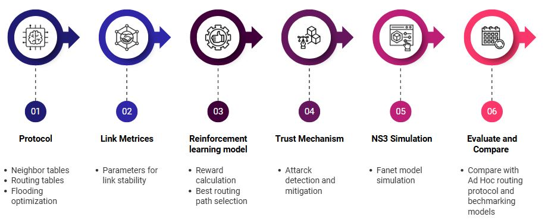
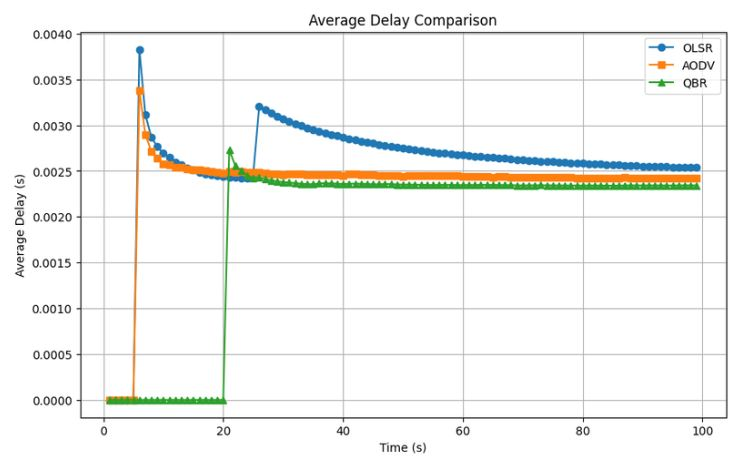
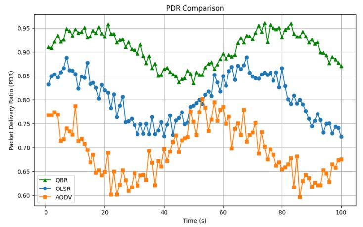
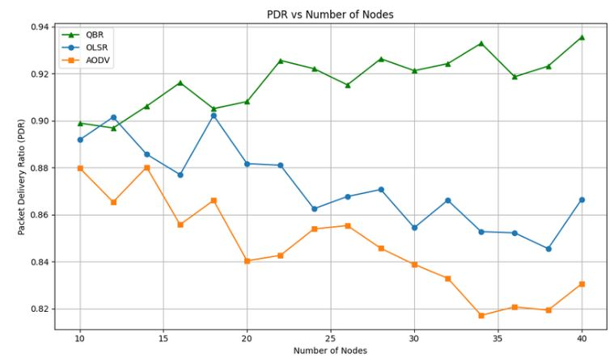
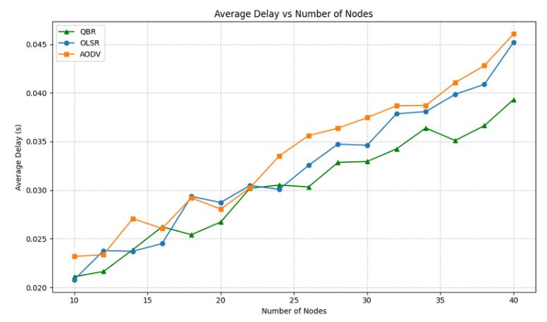

A machine learning–based routing protocol that uses Q-learning to enable resilient and self-optimizing routing in Flying Ad-hoc Networks (FANETs)
View GitHub RepositoryEfficient routing in Flying Ad Hoc Networks (FANETs) remains a critical challenge due to time-varying link quality, high node mobility, and unpredictable network topology changes. Traditional routing protocols like OLSR and AODV heavily rely on static metrics and fixed decision rules. In highly dynamic scenarios, these static rules frequently fail to adapt to rapidly changing conditions, resulting in packet loss and high latency. This project proposes QBR (Q-Learning Based Routing), a novel machine learning-driven routing protocol that leverages Q-Learning integrated with Quantile Regression to make intelligent, adaptive routing decisions on demand.
Unlike conventional protocols, QBR dynamically adapts its path selection in real-time by learning from continuous network feedback. This feedback loop includes crucial link quality metrics such as Signal-to-Noise Ratio (SNR), packet loss rates, latency, and throughput. By evaluating QBR against established protocols in a comprehensive simulated 40-node wireless network using NS-3, experimental results demonstrate that QBR consistently achieves a higher Packet Delivery Ratio (PDR) and improved overall throughput. Furthermore, it manages to maintain competitive latency, particularly excelling in scenarios plagued with heavily fluctuating link quality.
Ultimately, this project firmly establishes that reinforcement learning-based routing can effectively overcome the inherent limitations of traditional routing paradigms in dynamic wireless environments. Our unique approach applies Quantile Regression to estimate the distribution of Q-values, allowing the model not just to estimate the average path quality, but to account for uncertainty. This paves the way for truly risk-aware routing decisions. In conclusion, our findings illustrate the immense potential of reinforcement learning to enhance network stability and performance. We confidently suggest that such intelligent, adaptive routing protocols represent the future of stable communication links in next-generation Flying Ad Hoc Networks.
Efficient routing in Flying Ad Hoc Networks remains a critical challenge due to time-varying link quality, node mobility, and unpredictable network topology changes. Traditional routing protocols like OLSR and AODV rely on static metrics and fixed decision rules, which often fail to adapt to rapidly changing conditions. This paper proposes QBR (Q-Learning Based Routing), a novel machine learning-driven routing protocol that leverages Q-Learning with Quantile Regression to make intelligent routing decisions on demand. Unlike conventional protocols, QBR adapts its path selection in real-time by learning from network feedback, including link quality metrics (SNR, packet loss), latency, and throughput. We evaluate QBR against established protocols (OLSR and AODV) in a simulated 40-node wireless network using NS-3. Experimental results demonstrate that QBR achieves higher Packet Delivery Ratio (PDR) and improved throughput while maintaining competitive latency, particularly in scenarios with fluctuating link quality. The findings illustrate the potential of reinforcement learning-based approaches to enhance routing performance in dynamic wireless networks.
QBR operates at the network layer by applying Q-Learning to continuously improve routing decisions based on network conditions. The protocol maintains a Q-Table where each state represents a combination of destination and neighboring nodes, and actions correspond to selecting the next hop for packet forwarding. Routing decisions are made using an ε-greedy strategy, which balances exploration of new paths and exploitation of known high-quality routes. The reward mechanism is designed using real-time link metrics such as signal-to-noise ratio (SNR), packet delivery success, and delay, enabling the protocol to learn from network feedback. Additionally, Quantile Regression is incorporated to estimate the distribution of Q-values, allowing the model to account for uncertainty in link quality and make risk-aware decisions. As packets are transmitted, the protocol dynamically updates its knowledge and progressively converges toward optimal routing paths under changing network conditions.

From the NS-3 simulation setup, the QBR protocol achieves a higher Packet Delivery Ratio (PDR) and lower average delay compared to both AODV and OLSR. As the number of nodes increases, QBR consistently demonstrates better performance, maintaining more stable and efficient routing under higher network density.




This work demonstrates that reinforcement learning-based routing can effectively address limitations of traditional routing protocols in dynamic wireless networks. QBR leverages Q-Learning and Quantile Regression to learn adaptive routing policies that improve Packet Delivery Ratio and throughput compared to OLSR and AODV. The experimental evaluation confirms that the protocol rapidly converges to optimal routing decisions as network conditions evolve. However, scalability to larger networks, computational overhead, and Q-Table memory requirements merit further investigation. Future work should explore hierarchical Q-Learning for large-scale networks, integration of multi-agent reinforcement learning for cooperative routing, and deployment on real wireless testbeds to validate simulation findings. The results suggest that machine learning approaches offer promising avenues for developing more intelligent and adaptive routing protocols in next-generation wireless networks.